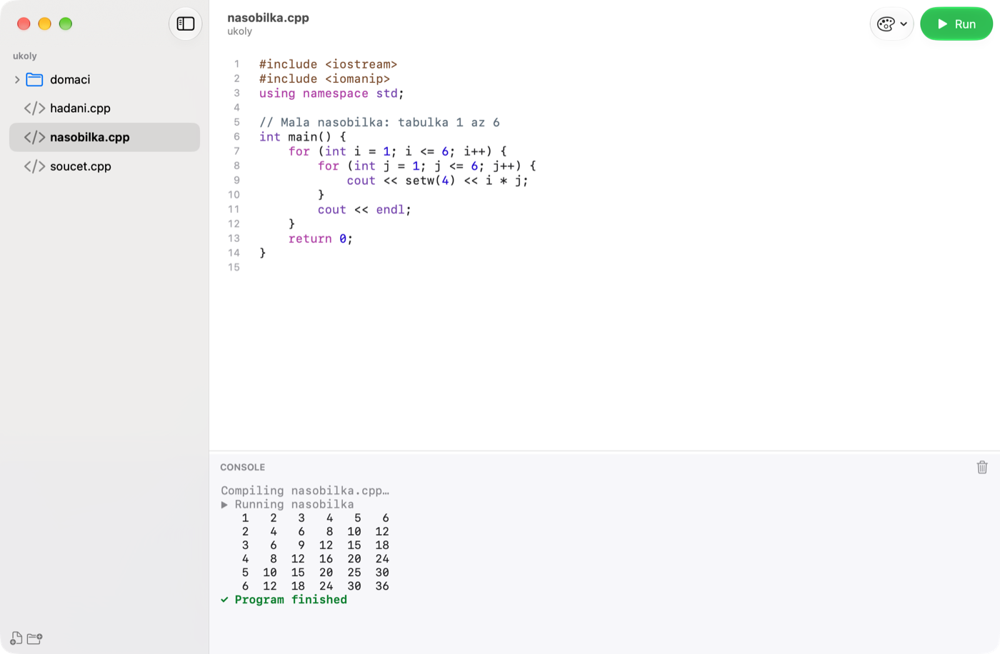
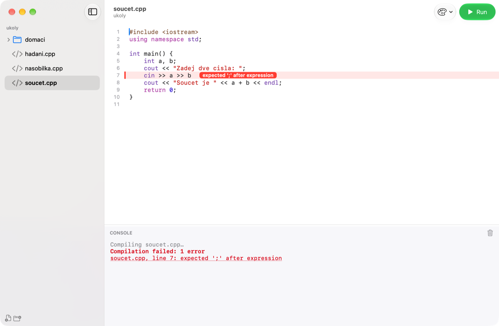
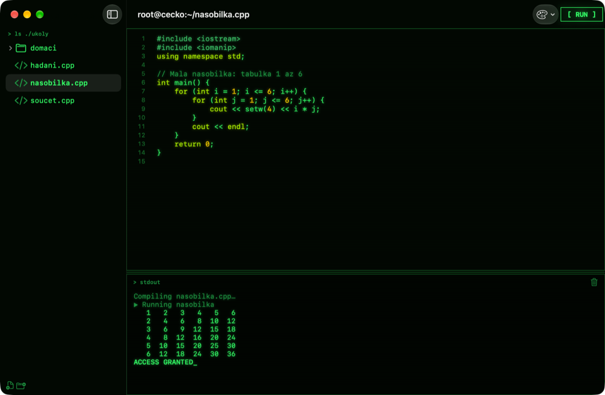
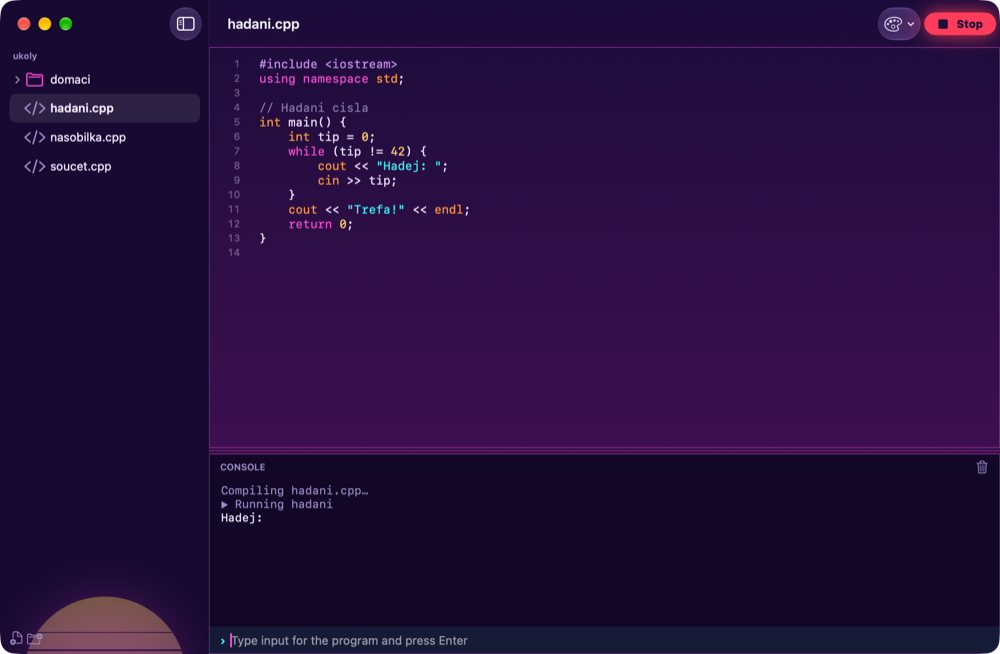
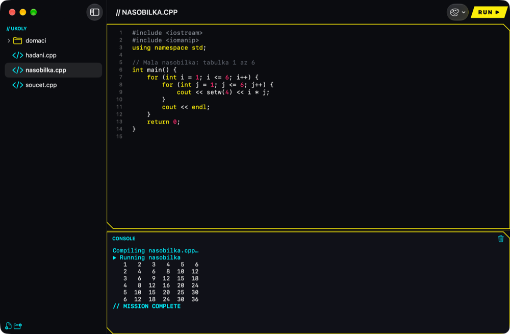
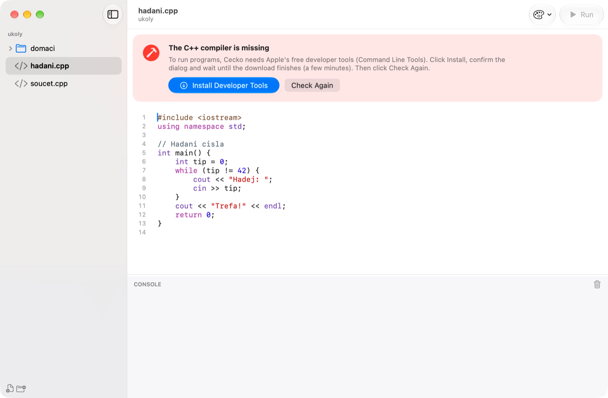

Getting started
- Download the disk image from the download page and open it.
- Drag Cecko to Applications and start it from there.
- On the first launch, click Choose Folder… and pick the folder where you keep your C++ programs. Cecko calls it the root folder, shows its files on the left and opens it again next time.
To switch to another folder later, choose File › Change Root Folder….
The main window

1 2 3 4 5- 1Explorer
- The files and folders of the root folder. Click a file to open it.
- 2Editor
- The open file, with C++ syntax colours and line numbers. Enter keeps the indentation, brackets and quotes close themselves, ⌘F finds and replaces.
- 3Run
- Compiles and starts the open program. While it runs, the button turns into Stop.
- 4Theme
- Switches between the four looks (see Themes).
- 5Console
- What the program prints, what you type into it, and messages from the compiler. Drag the line above it to make it taller or shorter; the trash icon clears it.
Running a program
Click Run or press ⌘R. Cecko saves the file, compiles it with the C++ compiler on your Mac and starts it in the console. Each .cpp file is its own program and needs its own main.
When the program reads input (cin, scanf), an input line appears at the bottom of the console. Type the value and press Enter. ⌃D ends the input, as in Terminal.
Stop (⌘.) ends a program that hangs or loops forever. At the end the console says how the program finished: normally, with an exit code other than 0, or with a crash such as segmentation fault.
Inserting loops and conditions
Right-click in the editor and choose Insert. The construct goes where you clicked, indented to fit, and the part you usually change next (the condition, the number of repeats, a name) is already selected, so you can type over it right away.
- Loops:
for,forover all items of a container,while,do-while. - Conditions:
if,if-else,if – else if – else,switch. - Other: a function, reading input (
cin), printing output (cout). In.cfiles these usescanfandprintf.
If you right-click in the middle of a line, the construct goes onto lines of its own. ⌘Z takes it back.
Compile errors

1 2If the program doesn't compile, the line with the mistake is highlighted and the compiler's message appears next to it (1). The messages are the compiler's own, in English. The console lists all of them (2); click one to jump to its line. Warnings are yellow and don't stop the program from running.
Files and folders
There is no saving: Cecko writes your changes a second after you stop typing, and always before Run. ⌘S saves right away if you want to be sure.
- File › New File (⌘N) creates
program.cppwith an emptymainready to fill in. - File › New Folder (⇧⌘N) creates a folder. Both also sit at the bottom of the explorer.
- Right-click a file or folder to rename it, show it in Finder or move it to the Trash.
- Changes made in other apps show up on their own.
- Files from Code::Blocks on Windows open with correct Czech characters and are saved back the same way;
#include <bits/stdc++.h>works. - To open a
.cppfile from Finder, choose Open With › Cecko or drag it onto Cecko in the Dock. Its folder becomes the root folder.
Themes
Pick a look with the palette button in the toolbar or in View › Theme. Cecko remembers it. Glass is the default: clean, with Liquid Glass, light or dark following macOS.



The cecko command
Choose Cecko › Install “cecko” Command… and enter your Mac password. After that, typing cecko . in Terminal opens the current folder in Cecko, and cecko hello.cpp opens a file.
If the compiler is missing

1Cecko uses Apple's free developer tools (Command Line Tools). If they are not installed, a banner appears above the editor and Run is unavailable. Click Install Developer Tools, confirm Apple's dialog and wait for the download (a few minutes). Then click Check Again.
Keyboard shortcuts
- ⌘R
- Run the open program
- ⌘.
- Stop the running program
- ⌃D
- End the program's input
- ⌘K
- Clear the console
- ⌘F
- Find and replace in the file
- ⌘N / ⇧⌘N
- New file / new folder
- ⇧⌘O
- Change the root folder
- ⌘S
- Save now
Updates
At every launch Cecko asks whether a newer version exists and, if so, offers it; nothing is installed without your OK. Cecko › Check for Updates… asks right away.